PGSQL x Pigsty: 数据库全能王
Pigsty v2.4.1已于9月24日正式发布。核心关注点是：如何聚拢 PostgreSQL 生态里游离的超能力，发挥出 1 + 1 远大于2 的协同增幅效果。
我们引入了 12 个由自己编译打包、整合维护的全新扩展，并加入了三个强力组件的原生支持： Suapbase，PostgresML 与 FerretDB 。让 Pigsty 收录的扩展数量已经达到了破纪录的 150 个，全部开箱即用！
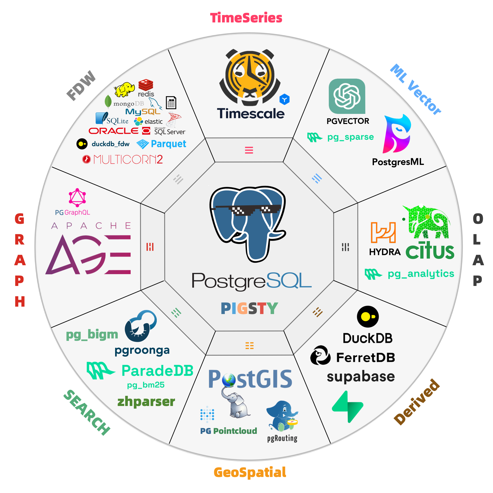
在这些新增/现有扩展的加持下，PostgreSQL —— 这个世界上最先进的开源关系型数据库，已经堪称是 数据库全能王 了。
- Supabase 支持：开源的 Firebase 替代，现可使用 Pigsty 本地托管的 PostgreSQL 实例作为数据存储。
- PostgresML支持：使用SQL完成经典机器学习算法，训练、微调、调用大语言模型（hugging face）。
- FerretDB v1.10 支持，在 PostgreSQL 上提供 MongoDB API与协议兼容能力。
- GraphQL扩展:
pg_graphql：从现有模式中反射出 GraphQL 模式，提供库内 GraphQL 查询能力。 - JWT支持扩展：
pgjwt允许您使用 SQL 验证签发 JWT (JSON Web Tokens) - 密钥存储扩展:
vault可以在提供一个安全存储加密密钥的保险柜 - 数据恢复扩展：
pg_filedump：可用于快速从PostgreSQL二进制文件中恢复数据 - 图数据库扩展：Apache
age，为 PostgreSQL 添加 OpenCypher 查询支持，类似 Neo4J - 中文分词扩展：
zhparser，为中文全文检索提供分词能力，类似 ElasticSearch。 - 高效位图扩展：
pg_roaringbitmap，在 PostgreSQL 中提供 roaring bitmap 的支持，可用于高效计数聚合统计。 - 向量嵌入替代：
pg_embedding，提供了不同于 pgvector 的另一种 HNSW 替代实现。 - 可信语言扩展：
pg_tle，由 AWS 出品的，允许您打包分发管理由可信存储过程语言编写的函数，以扩展的方式进行管理与部署。 - HTTP客户端扩展：
pgsql-http：使用 SQL 接口，curl API，发起 HTTP 请求，与各类系统交互。 - 异步HTTP扩展：
pg_net允许您使用 SQL 发起非阻塞的 HTTP/HTTPS 请求。 - 列式存储引擎：
hydra针对分析场景打造的向量化列存储引擎，原地替代 Citus 列存插件。 - 其他PGDG扩展：新收录8个由PGDG维护的扩展插件，Pigsty支持的插件总数达到 150+ 。
- PostgreSQL 16 内核支持，监控云端 RDS / PolarDB for PostgreSQL。
Supabase 是一个有着 57K Star 的明星项目，基于 PostgreSQL 提供 Firebase 的开源替代。而 PostgresML 则是在 Postgres 里搞大模型训练调用/经典机器学习算法的当红炸子鸡。FerretDB 则提供基于 PG 的 MongoDB 兼容性：Pigsty 与这些社区都建立了良好的合作关系。
Supabase
我先前一直倡导一种基于 PostgreSQL 进行低代码开发的理念 —— 你只要设计好数据库模式，其实大部分后端代码编写是可以自动化生成的。
像 PostgREST 这样的工具可以自动从中反射生成定义良好，文档详实的 RESTful API。也有像 PostGraphile 这样的工具可以自动反射出 GraphQL API，最后，使用 Kong 这样的API 网关套一层，解决好认证、日志、限流的问题。用户完全可以在一行后端代码都不写的情况下，完成一个完整业务应用的开发。
Pigsty 确实也整合并提供了这些趁手的工具，但而 supabase 不仅实现了上面这个愿景，更是将其实现到了一个全新的高度。
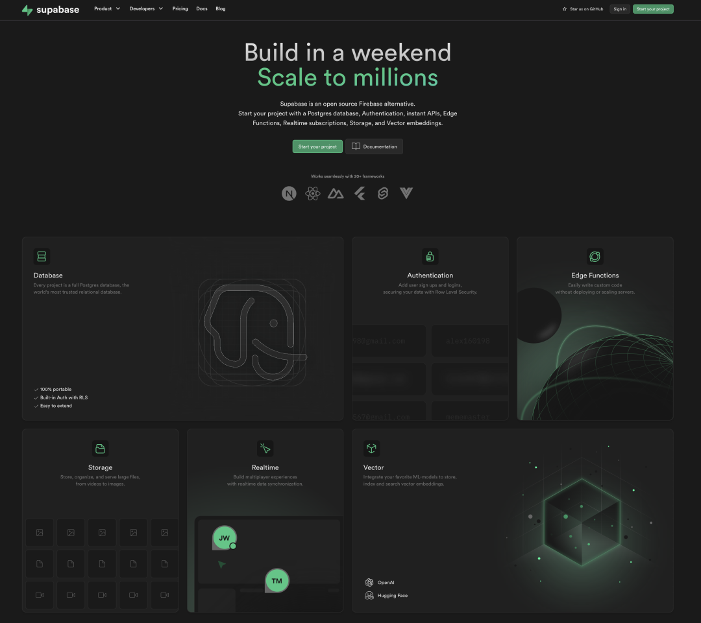
Supabase 帮全栈应用开发者补完了从数据库到前端之间的鸿沟：一键完成各种认证接入（邮件密码/手机号/魔法连接/社交网站登陆等等）；自动生成数据库 REST API 与 GraphQL API，通过 Websocket 发送数据库变更的实时通知，提供完整的文件上传下载/断点续传/图片变换/CDN分发功能，以及在全球分发管理CDN边缘TS函数，还提供一个优雅的管理控制台GUI与命令行工具管理所有一切。
Suapbase 的所有的功能都围绕 PostgreSQL 这个核心，并通过 Kong API 网关对外暴露。有了 Supabase，用户不需要再操心经典“后端”的实现细节，只需要做好数据库模型设计，与前端API调用就够了。
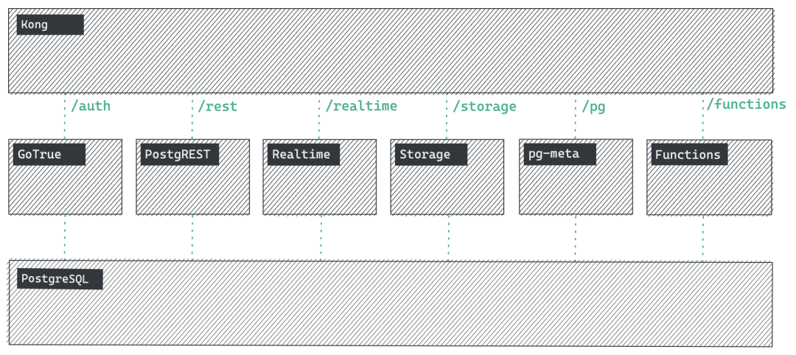
supabase 组件架构图
Supabase 封装了一部分 PostgreSQL 数据库管理的工作，包括一个单实例的 PostgreSQL 内核，加上自行维护的 pg_graphql, pg_net,vault,pgjwt 等扩展插件，充分利用了触发器，全文检索，密钥存储功能。提供了基础的 PITR 备份支持，还不错的安全管理最佳实践，与一个数据库管控 GUI 工具：Supabase Studio，可以说，对于一个起步阶段的应用来说是没问题的。
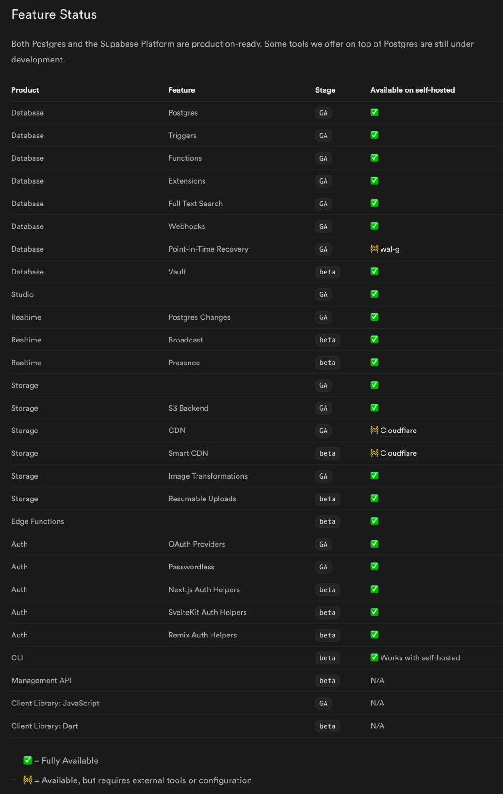
当然对于一个严肃的生产应用来说，数据库这部分还有许多问题有待解决：Supabase 的 Postgres 中仍然缺少 PostgreSQL 生态里的许多功能扩展，单实例+PITR的设计也不足以克服硬件失效带来的可用性冲击。在可靠性，安全性，性能，可观测性上也都还有许多薄弱环节。
但是不用担心， Pigsty 会帮助 Supabase 解决这些问题 —— 您现在可以使用由 Pigsty 所创建托管都故障自愈的多节点高可用 PostgreSQL 集群来承载 Supabase 上层的无状态服务部分。开源生态的魅力就在这里 —— 每个人干好自己最擅长的事情，而所有人都可以从中受益！
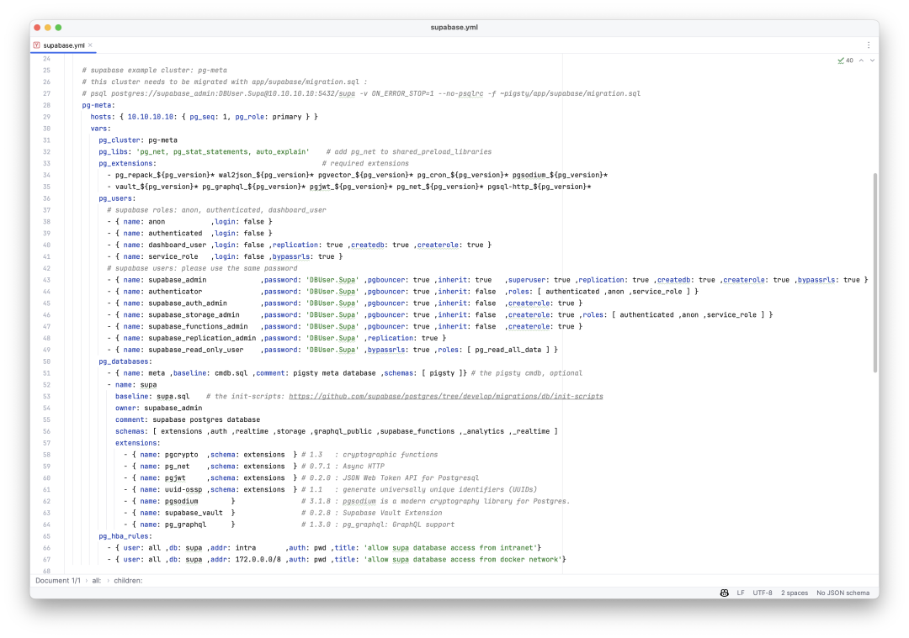
一键拉起 Supabase 所需的数据库
您只需要使用默认的 supabase 模板，即可一键部署 Supabase 所需要的数据库集群，您不需要操心用户、扩展、模式、HBA这些细节。只需要在.env配置文件模板中填入数据库连接串，然后 docker compose up ，你的 supabase 就立即进入可用状态了！
PostgresML
另一个 2.4 带来的的重大更新是 PostgresML 。AI 时代带火了向量数据库，这个方向上pgvector 已经交出了一份足够令人满意的答卷。但是存储嵌入只是 AI 生态对数据库需求的一部分，AI 的灵魂还是模型。PostgresML 则弥补了这一点缺憾：现在您可以在数据库中用 SQL 调用经典机器学习算法，以及直接调用 —— Hugging Face 上的模型，进行训练，微调，与预测。
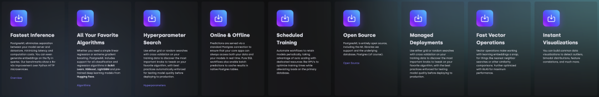
PostgresML 是用 RUST 编写的扩展，在一些运算密集型任务上使用 RUST linalg / BLAS 线性代数库取得了相比 Python 8x - 40x 的性能表现。更重要的是：它为 Python3 机器学习/AI工具链提供了 SQL Binding。以前您需要自行处理模型的选用，下载，部署与管理问题。而现在您不需要再了解这些繁琐的细节了！直接用拿着模型名字调函数就够了！
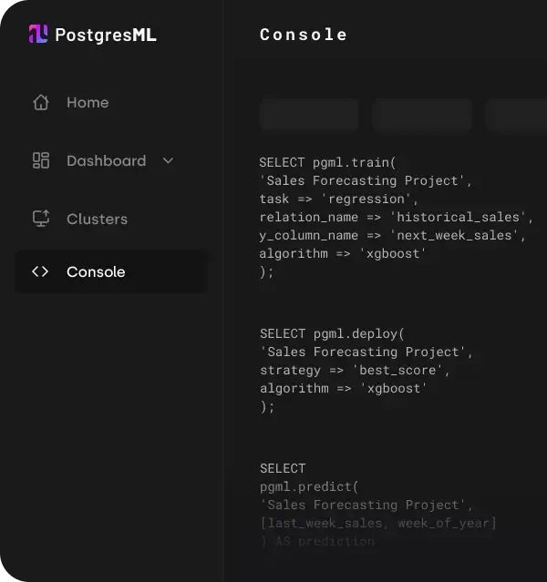
PostgresML 可以直接下载 Hugging Face 上的模型，对输入进行 Embedding，生成向量，并使用 pgvector 进行存储。让整个语义搜索的工作流在数据库内部完成闭环！原地完成数据准备、训练微调、预测输出、结果存储。
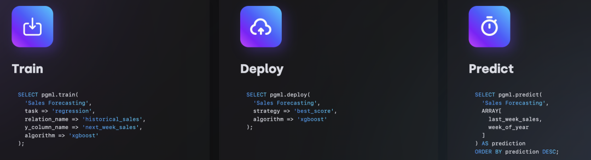
尽管 PostgresML 提供了官方 Docker 镜像，但它与各种 Postgrs 衍生镜像有着同样的问题 —— 难以利用好 PostgreSQL 生态系统的合力。您没有办法轻易为其加装想要的扩展并与其组合使用，以及，单机容器实例对于生产应用实在是过于简陋了。
Pigsty 可以帮您解决这个问题，您可以在拥有地理、时序、图、向量、全文检索、GraphQL ，HA / PITR / IaC / Monitor 等能力的同时，一键加装 PostgresML 扩展。PGML 与其他扩展的唯一区别就是，需要一些额外的 python / pip / virtualenv 环境的简单配置。但我相信这两行命令肯定也难不倒你。
FerretDB
FerretDB 是另一个非常有趣的项目，之前的名字叫 “MangoDB”，因为有碰瓷 “MongoDB” 的嫌疑，所以在 1.0 版本改成了现在的名字。但这不影响它的效果 —— 在 PostgreSQL 上提供 MongoDB Wire Protocol 支持，让 PG 假扮成一个 MongoDB！上次做这种事的插件是 AWS 的 Babelfish，让 PostgreSQL 兼容 SQL Service 的线缆协议假扮成 MSSQL。
use test # CREATE SCHEMA test;
db.dropDatabase() # DROP SCHEMA test;
db.createCollection('posts') # CREATE TABLE posts(_data JSONB,...)
db.posts.insert({ # INSERT INTO posts VALUES(...);
title: 'Post One',body: 'Body of post one',category: 'News',tags: ['news', 'events'],
user: {name: 'John Doe',status: 'author'},date: Date()}
)
db.posts.find().limit(2).pretty() # SELECT * FROM posts LIMIT 2;
db.posts.createIndex({ title: 1 }) # CREATE INDEX ON posts(_data->>'title');
PostgreSQL 的 JSON功能 已经非常完善了：二进制存储 JSONB，GIN 任意字段索引 ，各种 JSON 处理函数，JSON PATH 和 JSON Schema，它早已是一个功能完备，性能强大的文档数据库了。PostgreSQL 生态里还有 mongo_fdw 这样的组件，允许用户用 SQL 来访问现有的 MongoDB 数据。
但是提供替代的功能，和直接仿真还是不一样的。FerretDB 就可以为使用 MongoDB 驱动的应用程序提供一个丝滑迁移到 PostgreSQL 的过渡方案。MongoDB 中的主要特性：文档数据模型、运算符/函数，索引、增删改查，聚合等等都没啥问题。不过您要是用到了一些高级特性，那就不一定照顾的到了。
Pigsty 在 1.x 中就提供了基于 Docker 的 FerretDB 模板，在 v2.3 中更是提供了原生的部署支持。在 v2.4.1 中，FerretDB 更新到了 v1.10 版本。它作为一个选装项，是丰富 PostgreSQL 生态大有裨益。Pigsty 社区已经与 FerretDB 社区成为了合作伙伴，后续将进行深度的合作与适配支持。
zhparser
PostgreSQL 的 JSON 特性可以对标 MongoDB，而在全文检索能力上也有对标 ElasticSearch 的东西 —— TSQuery 与 TSVector。不同于 MySQ L凑数的 ngram “全文检索” 实现（PG对应物叫 pg_trgm），PostgreSQL 自带了各种语言的分词算法，开箱即用。唯一让人遗憾的就是，许多西文都天然会使用空格进行分词，但中文分词的问题要麻烦的多，针对西文的自带分词算法并不好使。
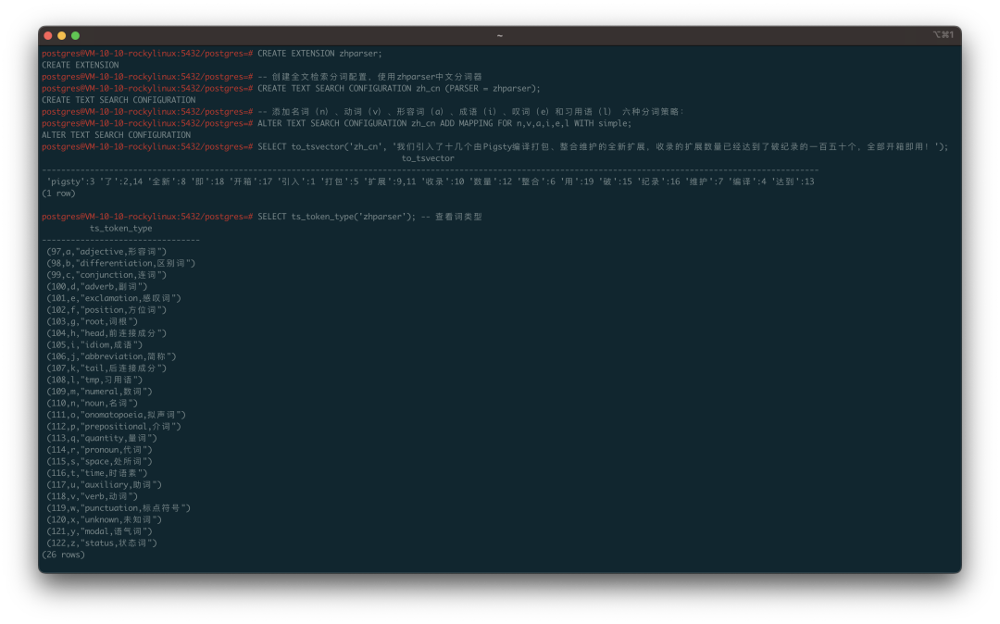
zhparser 的出现解决了这个问题。zhparser 使用 scws 项目进行中文分词，默认词库中标注了大量汉语词性，便于用户在创建分词配置时进行深度的定制。Pigsty 为 scws 与 zhparser 维护了 RPM 包，让用户可以开箱即用，体验完整的中文全文检索能力。
更有趣的是，向量数据库的语义搜索，也可以与这里的全文检索组合使用，向用户返回更具有可解释性的结果。
SELECT id, content FROM items, plainto_tsquery('hello search') query
WHERE textsearch @@ query ORDER BY ts_rank_cd(textsearch, query) DESC LIMIT 5;
组合使用
pgvector与zhparser
Apache AGE
另一个在 v2.4 引入的 PostgreSQL 强力扩展插件是 Apache AGE，AGE 是 “A Graph Extension” 的缩写 —— “一个图数据库扩展”。AGE 最初是另一个 PostgreSQL 上的图数据库扩展 AgensGraph 的分叉，并在 2020 年进入 Apache 基金会，2022 毕业为顶级项目。
AGE 的功能就是为 PostgreSQL 添加图数据库的能力。尽管 PostgreSQL 本身已经提供了类似的机制 —— 递归查询。但是 AGE 把原汁原味的 Cypher 图查询语言添加到了 PG 里，而且还能完全兼容现有的 PostgreSQL ACID 能力。并允许你您混合执行 Cypher 查询与 SQL 查询进行数据分析。
-- 加载图插件
LOAD 'age'; SET search_path = ag_catalog, "$user", public;
-- 创建图
SELECT create_graph('immgration');
-- 插入样例数据
SELECT * FROM cypher('immgration', $$
CREATE
(NAmerica:Location {name:'North America', type:'continent'}),
(USA:Location {name:'United States', type:'country' }),
(Idaho:Location {name:'Idaho', type:'state' }),
(Lucy:Person {name:'Lucy' }),
(Idaho) -[:WITHIN]-> (USA) -[:WITHIN]-> (NAmerica),
(Lucy) -[:BORN_IN]-> (Idaho)
$$) as (v agtype);
-- 执行图查询
SELECT * FROM cypher('immgration', $$
MATCH
(person) -[:BORN_IN]-> () -[:WITHIN*0..]-> (us:Location {name:'United States'}),
(person) -[:LIVES_IN]-> () -[:WITHIN*0..]-> (eu:Location {name:'Europe'})
RETURN person.name
$$) as (v agtype);
对于图数据库来说，Cypher 语言提供的 MATCH 非常有表达力。例如上面4行 Cypher 查询如果用 PostgreSQL 的标准建模方式与递归查询能力，其实也是可以实现的，但显然要啰嗦上许多。如下所示：
WITH RECURSIVE
-- in_usa 包含所有的美国境内的位置 ID
in_usa(vertex_id) AS (
SELECT vertex_id FROM vertices WHERE properties ->> 'name' = 'United States'
UNION
SELECT edges.tail_vertex FROM edges
JOIN in_usa ON edges.head_vertex = in_usa.vertex_id
WHERE edges.label = 'within'
),
-- in_europe 包含所有的欧洲境内的位置 ID
in_europe(vertex_id) AS (
SELECT vertex_id FROM vertices WHERE properties ->> 'name' = 'Europe'
UNION
SELECT edges.tail_vertex FROM edges
JOIN in_europe ON edges.head_vertex = in_europe.vertex_id
WHERE edges.label = 'within' ),
-- born_in_usa 包含了所有类型为 Person，且出生在美国的顶点
born_in_usa(vertex_id) AS (
SELECT edges.tail_vertex FROM edges
JOIN in_usa ON edges.head_vertex = in_usa.vertex_id
WHERE edges.label = 'born_in' ),
-- lives_in_europe 包含了所有类型为 Person，且居住在欧洲的顶点。
lives_in_europe(vertex_id) AS (
SELECT edges.tail_vertex FROM edges
JOIN in_europe ON edges.head_vertex = in_europe.vertex_id
WHERE edges.label = 'lives_in')
SELECT vertices.properties ->> 'name'
FROM vertices
JOIN born_in_usa ON vertices.vertex_id = born_in_usa.vertex_id
JOIN lives_in_europe ON vertices.vertex_id = lives_in_europe.vertex_id;
PG GraphQL
说起图来，除了Neo4J 这类“图数据库”，还有一个与数据库有点关系的东西 —— GraphQL：这是与 REST API 对应的一种 API 设计新范式。
GraphQL 为 API 提供了一种声明式的查询语言：用户声明自己想要什么东西，并获取可预期的结果；一次请求可以拿到多种所需的资源，避免重复调用手动拼接；自带的类型系统、IDE工具让 API 的使用更加简便。
这也是 supabase 超能力的一个重要来源 —— pg_graphql 。这是一个使用 RUST 开发的 PG 插件，由 suapbase 团队维护。想要在托管 PostgreSQL 实例上运行 Supabase，首先要解决的就是这些 Supabase 专有扩展的问题。Pigsty 已经帮用户把这部分做了：不过只支持 EL 8/9 上的 PG 14/15 。
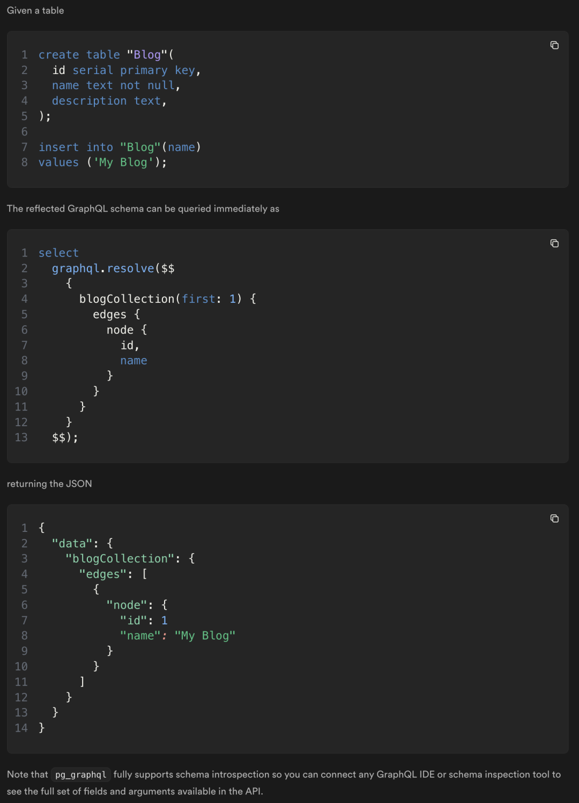
为 PostgreSQL 添加 GraphQL API 支持这件事，早在 七八年前就有人做过了，比如 postgraphql，就可以反射 PG 内部的模式，并自动生成查询数据库的 GraphQL API。
然而，还没有一个工具能像 pg_graphql 这样，直接在 PostgreSQL 数据库内部，通过内建函数的方式，提供了原生的 GraphQL 查询支持！这意味着你不需要维护任何额外的组件，就可以使用全新的语言来访问 PostgreSQL 的数据了。
PG NET/HTTP
用 SQL 接口发送接收 HTTP 请求并不是一个新鲜事儿， Oracle 的 UTL_HTTP 包就是干这个的。PostgreSQL 也可以通过各种语言的存储过程来发送 HTTP 请求。但 pgsql-http 与 pg_net 则利用原生的 curl API，提供了 SQL 直接可用的 HTTP 接口，发送同步/异步请求，并处理响应数据，这显然比写存储过程要优雅多了！
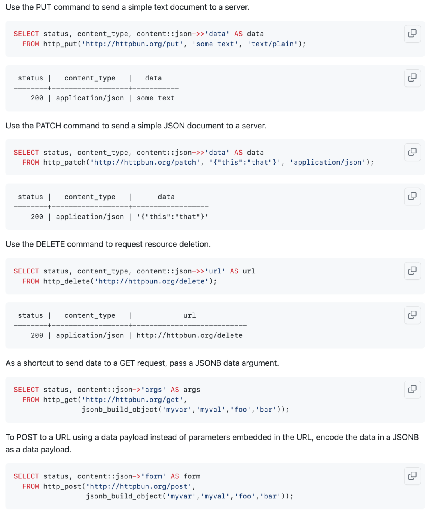
您可以直接使用 SQL 构建 HTTP 请求，拼接首部，使用 pgcrypto 对请求进行签名。同步/异步发送 HTTP 请求，并使用 JSON 特性来解析处理结果，这项特性有着近乎无限的想象空间 —— 可以玩出许多“骚操作”。比如，如果你的咖啡机可以响应 HTTP 请求，那么调用 API 就能让你的数据库煮咖啡的能力了。
你可以在数据库内写爬虫，查询天气，拉取账单，也可以用这个能力来实现一些更有生产价值的功能，比如任务执行完毕后发送通知，或者当表/行出现增删改时通过 HTTP 请求与外部进行通信同步：或者实现类似于 Infra as CMDB SQL 的效果。
PG FileDump
pg_filedump 是 v2.4.1 引入的另一个“扩展”。它实际上是一个PG版本相关的二进制程序：可以用来从PostgreSQL 数据页面中抽取数据。当您的数据库或者磁盘爆炸又没有备份的话，它会成为一棵救命稻草。
引入它的契机正是因为最近我们接了一个比较离谱的PG数据恢复的活儿，只有一些残余的二进制文件可供抽取还原。而 pg_filedump 就是这样一个趁手的工具。使用起来也很直接，用 -D 告诉 pg_filedump 如何解释表二进制文件里每一行的二进制数据就可以了。关于它的用法，后面我们准备了一篇关于底层数据恢复的案例，将于最近几天发出。
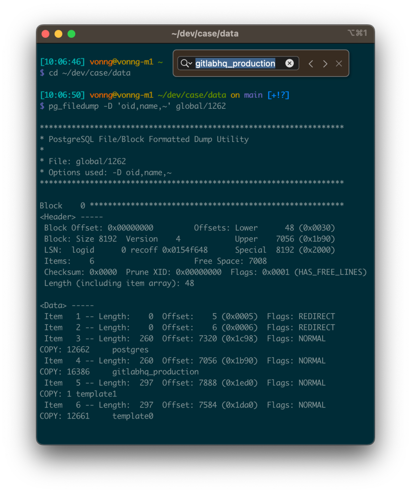
尽管 pg_filedump 还存在一些局限性：例如对于复杂的JSON/数组数据处理还有缺陷。但作为一个应急工具来说，已经足够好用了。我们针对 PG 12 - 16 提供了此扩展。我们希望您永远也不要用到这个扩展，但我们也希望：当您需要它的时候，它已经在那里了。
Hydra / Citus
Hydra 是一个列式存储扩展，旨在为 PostgreSQL 提供高性能的向量化列存储扩展。PostgreSQL 生态其实已经有一些列式存储扩展，例如 Citus 自带的 columnar，以及 TimescaleDB 针对时序数据的压缩列存引擎。不过看起来 hydra 在这个领域又达到了新的高度：在它给出的样例场景中（500G count），它可以达到令人震惊的加速比：从四五分钟到亚秒级。
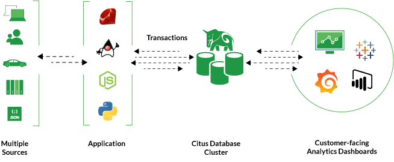
Hydra Fork 自 Citus 的列存插件 columnar，但进行了许多改进优化，例如矢量化执行，查询并性化，并进行了一系列针对性的调优。hydra 目前已经 1.0 GA，Pigsty 针对 PG13 - 15 提供了它的 RPM 包，放在 Pigsty 官方yum 源中。
不过目前 Pigsty 的离线软件包里默认并没有收录它，因为它与 Citus 的 columnar 有同名冲突。Hydra 的列存插件号称可以原地替换掉 Citus 的列存实现，所以您依然可以方便地通过简单配置，一键安装替换。
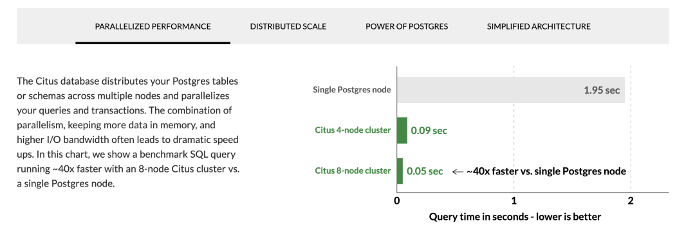
这里顺带一提，除了上面介绍的几个新增扩展外， Pigsty 本身也早已经支持了许多经典扩展，例如 Citus 就是最重要的扩展之一。Citus 可以将经典的主从PG集群原地改造为一个水平分片的分布式数据库集群，提供 scale out 与并行加速的能力。
Citus 被微软收购后变为 Azure 上的 Hyperscale for PostgreSQL 数据库，且使用 AGPLv3 协议完全开源。原本企业版的能力（例如在线分片平衡）也完全开源可用了，对于分布式 SQL 的支持程度要比许多基于中间件的方案还要靠谱得多。
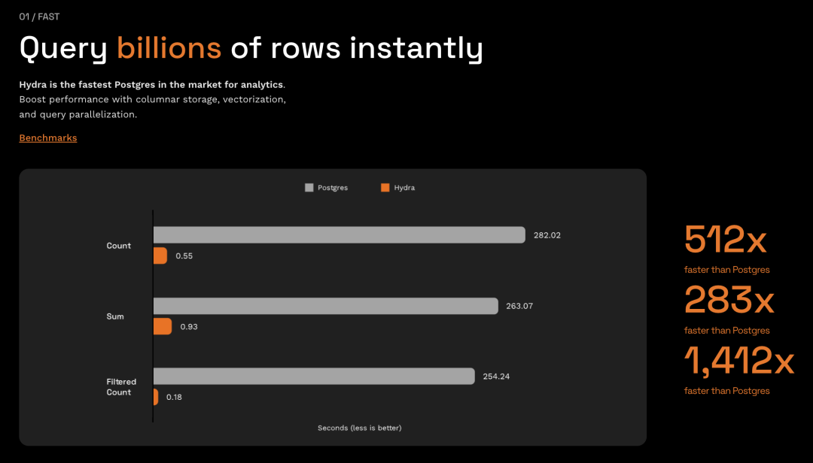
Pigsty 很早便提供了对 Citus 的第一等支持：您可以方便地一键搭建由 Patroni 管理的高可用 Citus 水平分布式集群组，享受灵活的动态扩缩容与分布式 HTAP 查询能力。
Embedding / Vector
向量数据库大火，PG生态的 PGVECTOR 就是我们提进 PGDG 官方仓库的，所以我们之前也写了一些专题文章进行介绍（《PGVECTOR与AI大模型》）。不过 PostgreSQL 生态的向量数据库扩展，可不是只有 pgvector 一个选手，另一个有些许竞争力的向量扩展是 pg_embedding。
pg_embedding 由 PostgreSQL 当红炸子鸡创业公司 neon 维护，主打的卖点是性能：HNSW 索引比 IVFFLAT 有一些显著的优势。不过 PGVector 在最近的版本 v0.5 之后也提供了 HNSW 索引，所以这里的利弊权衡就比较微妙了。
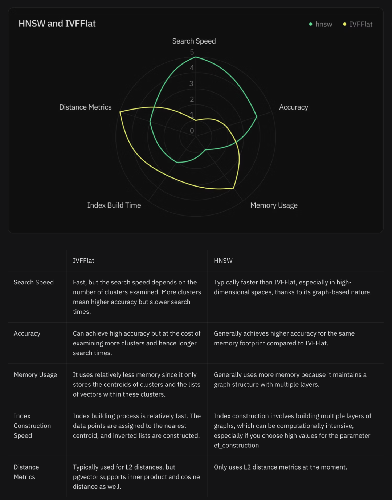
不同于 pgvector 使用独立的新类型 vector，pg_embedding 是建立在 PostgreSQL 现有的浮点数组类型之上的：向量的数据类型是 PostgreSQL 原生的 real[]。这种做法有利有弊：好处是不需要一个新类型，坏处是它指定死了浮点数的精度（Float4），不利于后面添加降低精度/量化之类的功能实现。但总之，我们也将其收录到了 Pigsty 的扩展列表中，供用户选用与评估。
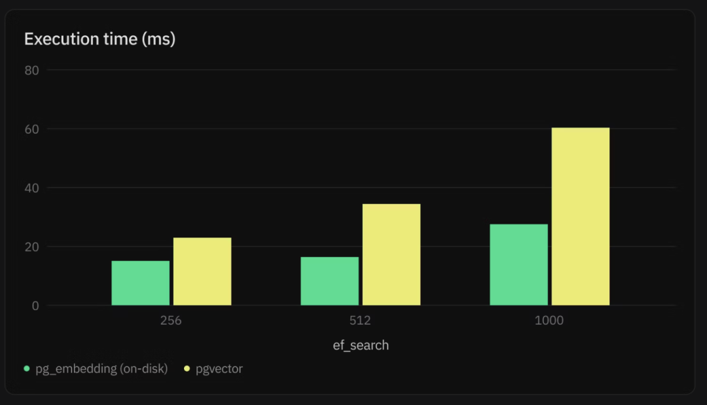
此外，还有几个向量扩展插件，例如使用 RUST 重写的 pgvector.rs，以及刚冒出来的 Latern。前者功能已经被 PGVector 完整覆盖，后者则是 pg_embedding 的拙劣分支换皮，因此并未收入 Pigsty 中。
PostGIS
除了上面介绍的几个新增扩展外， Pigsty 本身也早已经支持了许多经典扩展，例如 PostGIS 与 TimescaleDB 。便是为 PostgreSQL 提供了地理空间时序事件处理的能力，堪称 PG 的杀手级扩展。每一个的分量都配得上一个专用数据库的称号，但它们却愿意选择成为 PG 生态的扩展，而不是自立门户。
PostGIS 的能力不用过多介绍，做 GIS 的人都懂。MySQL ，Mongo 这些数据库确实跟进了一些 ST_XX 空间函数，但是在 PostGIS 依然有着碾压性的优势：它已经成为了地理空间信息处理的事实标准了。
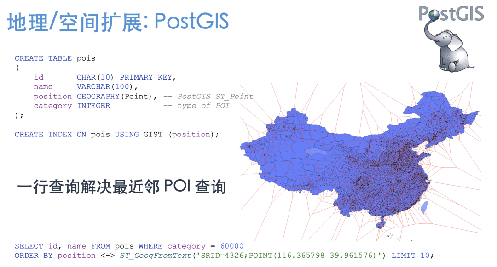
TimescaleDB
TimescaleDB 为 PostgreSQL 提供了一系列非常实用的功能：强大的写入能力，完整的SQL能力，时间桶聚集函数，持续聚集，数据生命周期管理：设置分区/分级/压缩/降采样/保留策略，列存储/分布式实现，覆盖了时序相关数据的方方面面。
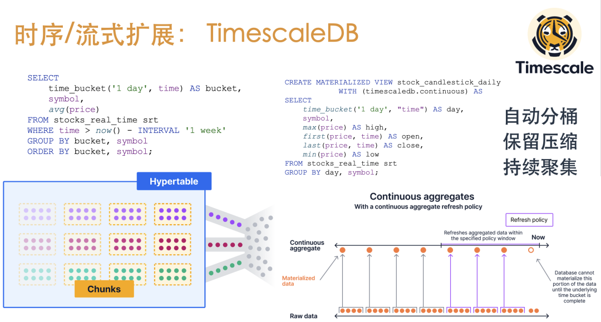
在 benchant 提供的时序数据库测评中， TimescaleDB 是唯一上榜的“扩展”，排在专用时序数据库 IoTDB 与 QuestDB 之后。尽管在性能单项上与榜一大哥有差距，但数据库领域比拼的从来都是综合实力 —— 它的背后，还站着整个 PostgreSQL 生态系统。
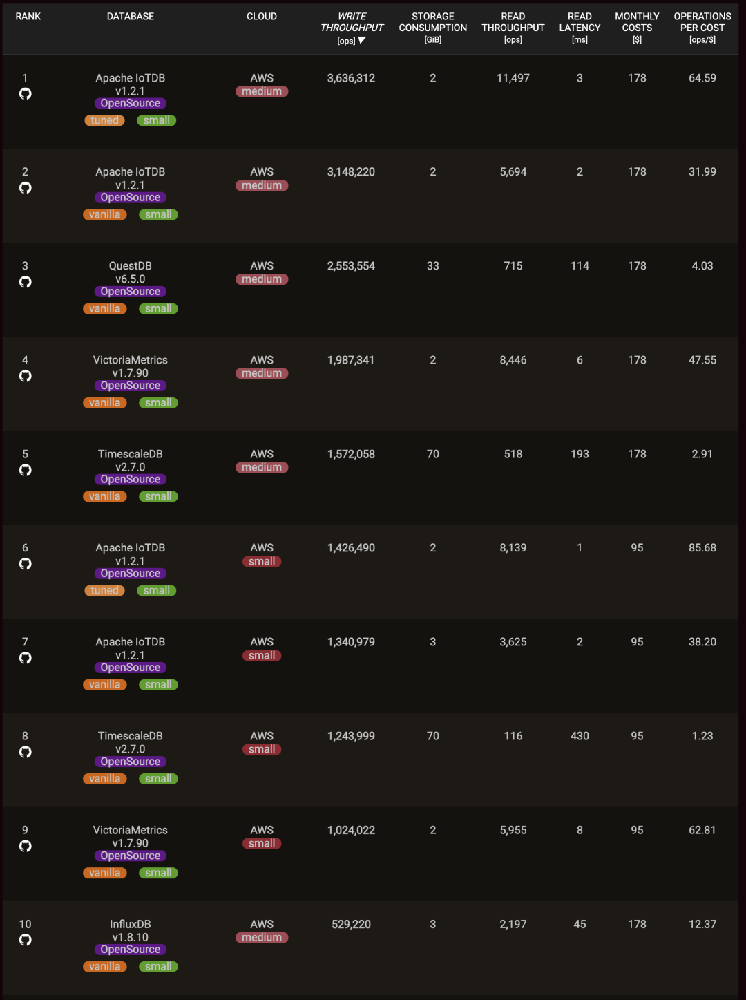
专用数据库并非不好：专用组件在自己领域中的实力毋庸置疑。但正如向量数据库领域正在发生的事一样：那些使用多种专⻔数据库客户会不断遇到这类典型问题：数据冗余、 大量不必要的数据搬运工作、分布式组件之间的缺乏数据一致性、额外的专业技能劳动力成本、 额外的软件许可成本、有限的查询语言能力、可编程性和可扩展性、有限的工具集成、以及与真正数据库相比更差的数据完整性和可用性。
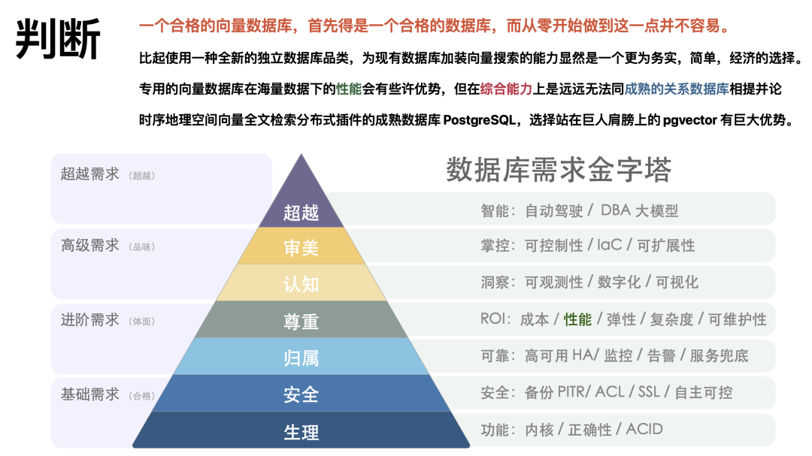
其他扩展
Pigsty 提供了 150+ 扩展插件（包括PG自带的一些 Contrib 插件），一次性同时把所有150个扩展安装上去是可行的，尽管这可能是一种相当疯狂的做法。
好在所有的扩展插件都是可选项，您完全完全可以按需定制，选择自己想要启用哪些扩展插件。Pigsty 确保所有这些扩展都可以一键从 Yum 安装，正确地 CREATE EXTENSION 不出错。对于重要的核心扩展来说，Pigsty 更是通过各种测试确保它们可以稳定运行并协同工作。
完整支持的扩展列表
| 名称 | 版本 | 来源 | 类型 | 说明 |
|---|---|---|---|---|
| credcheck | 2.1.0 | PGDG | ADMIN | 明文凭证检查器 |
| pg_cron | 1.5 | PGDG | ADMIN | 定时任务调度器 |
| pg_background | 1.0 | PGDG | ADMIN | 在后台运行 SQL 查询 |
| pg_jobmon | 1.4.1 | PGDG | ADMIN | 记录和监控函数 |
| pg_readonly | 1.0.0 | PGDG | ADMIN | 将集群设置为只读 |
| pg_repack | 1.4.8 | PGDG | ADMIN | 在线垃圾清理与表膨胀治理 |
| pg_squeeze | 1.5 | PGDG | ADMIN | 从关系中删除未使用空间 |
| pgfincore | 1.2 | PGDG | ADMIN | 检查和管理操作系统缓冲区缓存 |
| pglogical | 2.4.3 | PGDG | ADMIN | 第三方逻辑复制支持 |
| pglogical_origin | 1.0.0 | PGDG | ADMIN | 用于从 Postgres 9.4 升级时的兼容性虚拟扩展 |
| prioritize | 1.0 | PGDG | ADMIN | 获取和设置 PostgreSQL 后端的优先级 |
| set_user | 4.0.1 | PGDG | AUDIT | 增加了日志记录的 SET ROLE |
| passwordcracklib | 3.0.0 | PGDG | AUDIT | 强制密码策略 |
| pgaudit | 1.7 | PGDG | AUDIT | 提供审计功能 |
| pgcryptokey | 1.0 | PGDG | AUDIT | 密钥管理 |
| hdfs_fdw | 2.0.5 | PGDG | FDW | hdfs 外部数据包装器 |
| mongo_fdw | 1.1 | PGDG | FDW | MongoDB 外部数据包装器 |
| multicorn | 2.4 | PGDG | FDW | 用 Python 3.6 编写字定义的外部数据源包装器 |
| mysql_fdw | 1.2 | PGDG | FDW | MySQL外部数据包装器 |
| pgbouncer_fdw | 0.4 | PGDG | FDW | 用 SQL 查询 pgbouncer 统计信息，执行 pgbouncer 命令。 |
| sqlite_fdw | 1.1 | PGDG | FDW | SQLite 外部数据包装器 |
| tds_fdw | 2.0.3 | PGDG | FDW | TDS 数据库（Sybase/SQL Server）外部数据包装器 |
| emaj | 4.2.0 | PGDG | FEAT | 让数据库的子集具有细粒度日志和时间旅行功能 |
| periods | 1.2 | PGDG | FEAT | 为 PERIODs 和 SYSTEM VERSIONING 提供标准 SQL 功能 |
| pg_ivm | 1.5 | PGDG | FEAT | 增量维护的物化视图 |
| pgq | 3.5 | PGDG | FEAT | 通用队列的PG实现 |
| pgsodium | 3.1.8 | PGDG | FEAT | 表数据加密存储 TDE |
| timescaledb | 2.11.2 | PGDG | FEAT | 时序数据库扩展插件 |
| wal2json | 2.5.1 | PGDG | FEAT | 用逻辑解码捕获 JSON 格式的 CDC 变更 |
| vector | 0.5.0 | PGDG | FEAT | 向量数据类型和 ivfflat / hnsw 访问方法 |
| count_distinct | 3.0.1 | PGDG | FUNC | COUNT(DISTINCT …) 聚合的替代方案，可与 HashAggregate 一起使用 |
| ddlx | 0.23 | PGDG | FUNC | DDL 提取器 |
| extra_window_functions | 1.0 | PGDG | FUNC | 额外的窗口函数 |
| mysqlcompat | 0.0.7 | PGDG | FUNC | MySQL 兼容性函数 |
| orafce | 4.5 | PGDG | FUNC | 模拟 Oracle RDBMS 的一部分函数和包的函数和运算符 |
| pgsql_tweaks | 0.10.0 | PGDG | FUNC | 一些便利函数与视图 |
| tdigest | 1.4.0 | PGDG | FUNC | tdigest 聚合函数 |
| topn | 2.4.0 | PGDG | FUNC | top-n JSONB 的类型 |
| unaccent | 1.1 | PGDG | FUNC | 删除重音的文本搜索字典 |
| address_standardizer | 3.3.3 | PGDG | GIS | 地址标准化函数。 |
| address_standardizer_data_us | 3.3.3 | PGDG | GIS | 地址标准化函数：美国数据集示例 |
| postgis | 3.3.3 | PGDG | GIS | PostGIS 几何和地理空间扩展 |
| postgis_raster | 3.3.3 | PGDG | GIS | PostGIS 光栅类型和函数 |
| postgis_sfcgal | 3.3.3 | PGDG | GIS | PostGIS SFCGAL 函数 |
| postgis_tiger_geocoder | 3.3.3 | PGDG | GIS | PostGIS tiger 地理编码器和反向地理编码器 |
| postgis_topology | 3.3.3 | PGDG | GIS | PostGIS 拓扑空间类型和函数 |
| amcheck | 1.3 | PGDG | INDEX | 校验关系完整性 |
| bloom | 1.0 | PGDG | INDEX | bloom 索引-基于指纹的索引 |
| hll | 2.16 | PGDG | INDEX | hyperloglog 数据类型 |
| pgtt | 2.10.0 | PGDG | INDEX | 全局临时表功能 |
| rum | 1.3 | PGDG | INDEX | RUM 索引访问方法 |
| hstore_plperl | 1.0 | PGDG | LANG | 在 hstore 和 plperl 之间转换 |
| hstore_plperlu | 1.0 | PGDG | LANG | 在 hstore 和 plperlu 之间转换 |
| plpgsql_check | 2.3 | PGDG | LANG | 对 plpgsql 函数进行扩展检查 |
| plsh | 2 | PGDG | LANG | PL/sh 程序语言 |
| citus | 12.0-1 | PGDG | SHARD | Citus 分布式数据库 |
| citus_columnar | 11.3-1 | PGDG | SHARD | Citus 列式存储 |
| pg_fkpart | 1.7 | PGDG | SHARD | 按外键实用程序进行表分区的扩展 |
| pg_partman | 4.7.3 | PGDG | SHARD | 用于按时间或 ID 管理分区表的扩展 |
| plproxy | 2.10.0 | PGDG | SHARD | 作为过程语言实现的数据库分区 |
| hypopg | 1.4.0 | PGDG | STAT | 假设索引，用于创建一个虚拟索引检验执行计划 |
| logerrors | 2.1 | PGDG | STAT | 用于收集日志文件中消息统计信息的函数 |
| pg_auth_mon | 1.1 | PGDG | STAT | 监控每个用户的连接尝试 |
| pg_permissions | 1.1 | PGDG | STAT | 查看对象权限并将其与期望状态进行比较 |
| pg_qualstats | 2.0.4 | PGDG | STAT | 收集有关 quals 的统计信息的扩展 |
| pg_stat_kcache | 2.2.2 | PGDG | STAT | 内核统计信息收集 |
| pg_stat_monitor | 2.0 | PGDG | STAT | 提供查询聚合统计、客户端信息、计划详细信息（包括计划）和直方图信息。 |
| pg_store_plans | 1.7 | PGDG | STAT | 跟踪所有执行的 SQL 语句的计划统计信息 |
| pg_track_settings | 2.1.2 | PGDG | STAT | 跟踪设置更改 |
| pg_wait_sampling | 1.1 | PGDG | STAT | 基于采样的等待事件统计 |
| pldbgapi | 1.1 | PGDG | STAT | 用于调试 PL/pgSQL 函数的服务器端支持 |
| plprofiler | 4.2 | PGDG | STAT | 剖析 PL/pgSQL 函数 |
| powa | 4.1.4 | PGDG | STAT | PostgreSQL 工作负载分析器-核心 |
| system_stats | 1.0 | PGDG | STAT | PostgreSQL 的系统统计函数 |
| citext | 1.6 | PGDG | TYPE | 用于不区分大小写字符字符串的数据类型 |
| geoip | 0.2.4 | PGDG | TYPE | IP 地理位置扩展（围绕 MaxMind GeoLite 数据集的包装器） |
| ip4r | 2.4 | PGDG | TYPE | PostgreSQL 的 IPv4/v6 和 IPv4/v6 范围索引类型 |
| pg_uuidv7 | 1.1 | PGDG | TYPE | UUIDv7 支持 |
| pgmp | 1.1 | PGDG | TYPE | 多精度算术扩展 |
| semver | 0.32.1 | PGDG | TYPE | 语义版本号数据类型 |
| timestamp9 | 1.3.0 | PGDG | TYPE | 纳秒分辨率时间戳 |
| unit | 7 | PGDG | TYPE | SI 国标单位扩展 |
| lo | 1.1 | CONTRIB | ADMIN | 大对象维护 |
| old_snapshot | 1.0 | CONTRIB | ADMIN | 支持 old_snapshot_threshold 的实用程序 |
| pg_prewarm | 1.2 | CONTRIB | ADMIN | 预热关系数据 |
| pg_surgery | 1.0 | CONTRIB | ADMIN | 对损坏的关系进行手术 |
| dblink | 1.2 | CONTRIB | FDW | 从数据库内连接到其他 PostgreSQL 数据库 |
| file_fdw | 1.0 | CONTRIB | FDW | 访问外部文件的外部数据包装器 |
| postgres_fdw | 1.1 | CONTRIB | FDW | 用于远程 PostgreSQL 服务器的外部数据包装器 |
| autoinc | 1.0 | CONTRIB | FUNC | 用于自动递增字段的函数 |
| dict_int | 1.0 | CONTRIB | FUNC | 用于整数的文本搜索字典模板 |
| dict_xsyn | 1.0 | CONTRIB | FUNC | 用于扩展同义词处理的文本搜索字典模板 |
| earthdistance | 1.1 | CONTRIB | FUNC | 计算地球表面上的大圆距离 |
| fuzzystrmatch | 1.1 | CONTRIB | FUNC | 确定字符串之间的相似性和距离 |
| insert_username | 1.0 | CONTRIB | FUNC | 用于跟踪谁更改了表的函数 |
| intagg | 1.1 | CONTRIB | FUNC | 整数聚合器和枚举器（过时） |
| intarray | 1.5 | CONTRIB | FUNC | 1维整数数组的额外函数、运算符和索引支持 |
| moddatetime | 1.0 | CONTRIB | FUNC | 跟踪最后修改时间 |
| pg_trgm | 1.6 | CONTRIB | FUNC | 文本相似度测量函数与模糊检索 |
| pgcrypto | 1.3 | CONTRIB | FUNC | 实用加解密函数 |
| refint | 1.0 | CONTRIB | FUNC | 实现引用完整性的函数 |
| tablefunc | 1.0 | CONTRIB | FUNC | 交叉表函数 |
| tcn | 1.0 | CONTRIB | FUNC | 用触发器通知变更 |
| tsm_system_rows | 1.0 | CONTRIB | FUNC | 接受行数限制的 TABLESAMPLE 方法 |
| tsm_system_time | 1.0 | CONTRIB | FUNC | 接受毫秒数限制的 TABLESAMPLE 方法 |
| uuid-ossp | 1.1 | CONTRIB | FUNC | 生成通用唯一标识符（UUIDs） |
| btree_gin | 1.3 | CONTRIB | INDEX | 用GIN索引常见数据类型 |
| btree_gist | 1.7 | CONTRIB | INDEX | 用GiST索引常见数据类型 |
| bool_plperl | 1.0 | CONTRIB | LANG | 在 bool 和 plperl 之间转换 |
| bool_plperlu | 1.0 | CONTRIB | LANG | 在 bool 和 plperlu 之间转换 |
| hstore_plpython3u | 1.0 | CONTRIB | LANG | 在 hstore 和 plpython3u 之间转换 |
| jsonb_plperl | 1.0 | CONTRIB | LANG | 在 jsonb 和 plperl 之间转换 |
| jsonb_plperlu | 1.0 | CONTRIB | LANG | 在 jsonb 和 plperlu 之间转换 |
| jsonb_plpython3u | 1.0 | CONTRIB | LANG | 在 jsonb 和 plpython3u 之间转换 |
| ltree_plpython3u | 1.0 | CONTRIB | LANG | 在 ltree 和 plpython3u 之间转换 |
| plperl | 1.0 | CONTRIB | LANG | PL/Perl 存储过程语言 |
| plperlu | 1.0 | CONTRIB | LANG | PL/PerlU 存储过程语言（未受信/高权限） |
| plpgsql | 1.0 | CONTRIB | LANG | PL/pgSQL 程序设计语言 |
| plpython3u | 1.0 | CONTRIB | LANG | PL/Python3 存储过程语言（未受信/高权限） |
| pltcl | 1.0 | CONTRIB | LANG | PL/TCL 存储过程语言 |
| pltclu | 1.0 | CONTRIB | LANG | PL/TCL 存储过程语言（未受信/高权限） |
| pageinspect | 1.11 | CONTRIB | STAT | 检查数据库页面二进制内容 |
| pg_buffercache | 1.3 | CONTRIB | STAT | 检查共享缓冲区缓存 |
| pg_freespacemap | 1.2 | CONTRIB | STAT | 检查自由空间映射的内容（FSM） |
| pg_stat_statements | 1.10 | CONTRIB | STAT | 跟踪所有执行的 SQL 语句的计划和执行统计信息 |
| pg_visibility | 1.2 | CONTRIB | STAT | 检查可见性图（VM）和页面级可见性信息 |
| pg_walinspect | 1.0 | CONTRIB | STAT | 用于检查 PostgreSQL WAL 日志内容的函数 |
| pgrowlocks | 1.2 | CONTRIB | STAT | 显示行级锁信息 |
| pgstattuple | 1.5 | CONTRIB | STAT | 显示元组级统计信息 |
| sslinfo | 1.2 | CONTRIB | STAT | 关于 SSL 证书的信息 |
| cube | 1.5 | CONTRIB | TYPE | 用于存储多维立方体的数据类型 |
| hstore | 1.8 | CONTRIB | TYPE | 用于存储（键，值）对集合的数据类型 |
| isn | 1.2 | CONTRIB | TYPE | 用于国际产品编号标准的数据类型 |
| ltree | 1.2 | CONTRIB | TYPE | 用于表示分层树状结构的数据类型 |
| prefix | 1.2.0 | CONTRIB | TYPE | 前缀树数据类型 |
| seg | 1.4 | CONTRIB | TYPE | 表示线段或浮点间隔的数据类型 |
| xml2 | 1.1 | CONTRIB | TYPE | XPath 查询和 XSLT |
Pigsty 会为您默认安装一些重要的扩展：PostGIS，TimescaleDB，Citus，PGVector，PG Repack，wal2json。但并不是所有默认安装的扩展都会被激活：Pigsty 为您“自作主张”默认启用了 pg_stat_statements （查询监控），pg_repack （膨胀维护）以及 timescaledb（时序支持） ，您完全可以通过配置将其禁用。
pg-v15:
hosts: { 10.10.10.10: { pg_seq: 1 ,pg_role: primary } }
vars:
pg_cluster: pg-v15
pg_databases:
- name: test
extensions: # <----- 在数据库中启用这些扩展
- { name: postgis, schema: public }
- { name: timescaledb }
- { name: pg_cron }
- { name: vector }
- { name: age }
pg_libs: 'timescaledb, pg_cron, pg_stat_statements, auto_explain' # <- 个别扩展需要加载动态库方可运行
pg_extensions:
- pg_repack_${pg_version}* wal2json_${pg_version}* passwordcheck_cracklib_${pg_version}*
- postgis34_${pg_version}* timescaledb-2-postgresql-${pg_version}* pgvector_${pg_version}*
- pg_cron_${pg_version}* # <---- 新增的扩展：pg_cron
- apache-age_${pg_version}* # <---- 新增的扩展：apache-age
- zhparser_${pg_version}* # <---- 新增的扩展：zhparser
除了上面介绍的插件之外，PG 生态还有许多许多未被 PGDG 与 Pigsty 收录的扩展。如果您有一些想用的扩展没有被收录，欢迎在 Pigsty 仓库中提 Issue，或者使用 Pigsty 提供的编译基础设施自行打包、分发使用。
The Linux of Database
可以说，在上面这些扩展的加持之下， PostgreSQL 已经从一个强大的关系型数据库，变成一个怪兽级的多模态数据库全能王：自主可控自动驾驶时序地理空间AI向量分布式文档图谱全文检索可编程超融合联邦流批一体 HTAP Serverless 全栈式平台数据库。
PostgreSQL 是一专多长的全栈数据库，天生就是 HTAP，超融合数据库，基本单一组件便足以覆盖中小型企业绝大多数的数据库需求：在关系型 OLTP 上对标 Oracle/MySQL，有 JSONB/GIN 对标 MongoDB，有 PostGIS 对标地理空间数据库，有 TimescaleDB 来对标时序/流数据库，有 Citus/Hydra 来对标分布式/列存储/HTAP数据库，有全文检索来对标 ElasticSearch，有 AGE/EdgeDB 来对标图数据库，有 pgvector 来对标专用向量数据库。这些惊人的多模态能力，正是源自PG的扩展能力。
PostgreSQL 的可扩展机制与插件系统，让它不再仅仅是一个单线程演化的数据库内核，而可以有无数并行发展的支线，像量子计算一样同时探索各种方向上的可能性。每一个数据处理的细分垂直领域 PG 都不会缺席。就好比最近向量数据库领域大火，别的数据库都还没反应过来，PG 生态立刻就涌现出好几个相关插件，以迅雷不及掩耳之势抢占了这一块生态位。更有趣的是，扩展完全是按需启用的*可选项*，并不会影响内核主干的稳定性。
我认为在当下，数据库领域即将迎来 Linux 时刻 —— PostgreSQL 成为数据库领域的 Linux 内核。你并不难找到某个专业数据库在某个专业领域比 PostgreSQL 干的更漂亮：但没有一个其他数据库能够与所有扩展加持下的 PostgreSQL 比拼综合实力，包括 Oracle：是的，开源免费本身也是一种实力！
在一个相当可观的规模内，PostgreSQL 都可以独立扮演多面手的角色，一个数据库当多种组件使。更美妙的是，这些扩展的能力可以融合在一起，发挥1+1远大于2的效果来。单一数据组件选型可以极大地削减项目额外复杂度，节省大量成本与开发时间。如果真有那么一样技术可以满足你的各种数据需求，那么使用它就是最佳选择，而不是试图用多个组件来重新实现它。
而 Pigsty 的愿景，就是凝聚这些 PostgreSQL 生态的合力，并让所有这些能力，都对用户唾手可及。当然，那就是另一篇要说的故事了。
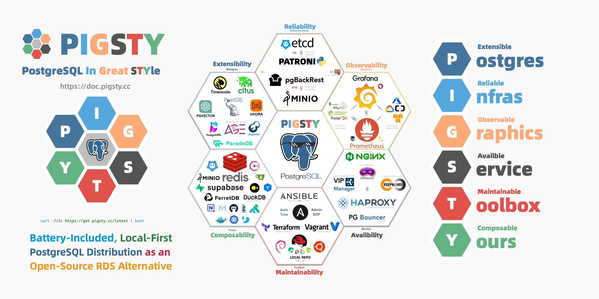
Release Note
Pigsty v2.1 发布：向量扩展 / PG12-16 支持